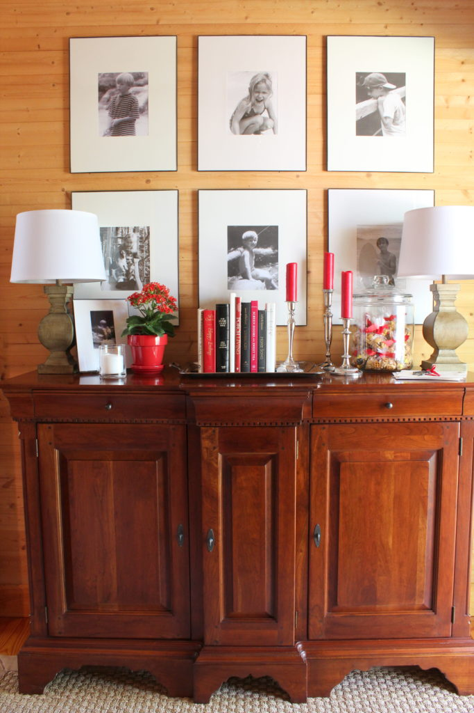
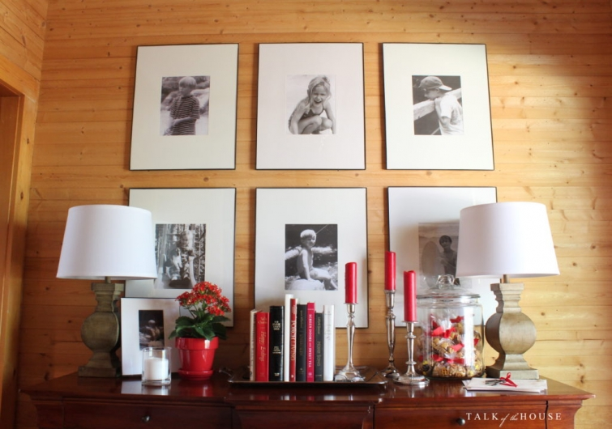

.png)
.PNG)
.PNG)
.PNG)
.PNG)
.PNG)
.JPG)
.JPG)
.PNG)
.PNG)


How’s that for a long title for you? 🙂 We’ve been on a string of travel talk posts for a little while here, so I thought I would throw in a home tour to give you a break from all the trips.
And this really is a no season, no holiday, no party, no color scheme one that I am really happy to share with you. 🙂
Are you asking Why would you be happy about that?
 Well, when we got home from our North Carolina trip I spent a week doing a total spring cleaning from top to bottom here. And there is nothing better to me than decorating a clean house. 🙂
Well, when we got home from our North Carolina trip I spent a week doing a total spring cleaning from top to bottom here. And there is nothing better to me than decorating a clean house. 🙂
Can I get an Amen to that?!
And for the last few years there has been a seasonal tour or a holiday or a party that has driven the decorating around here…every.single.month. Truly.
With the blogger Spring Tour done in March, and St. Patrick’s Day in March, and Easter in March, and my mother’s birthday in March, well that left nothing for April. (Actually there were a couple of things that I’ll tell you about in a minute, but they didn’t require decorating here.) Wasn’t it strange to not have Easter in April??
So as I finished cleaning, I could decorate the space however I wanted.
No seasonal anything.
No holiday anything.
No party decor to think about.
I could simply use my favorite color schemes in every room with my favorite accessories.
How easy was that? 🙂
So the foyer has red books and flowers and little bags of our favorite Chex mix. Oh, and the black and white photographs are back in place of the dark botanicals there. And the family room has our collection of vintage cameras back in the jars…
and yellow flowers…
(that love me even when I don’t water them!)
and yellow pillows.
Now come on in the dining room with me.
You’ll see the red buffalo check drapes are back with red accessories in there…
red candles and Oreos and more Chex mix…
and of course red cookbooks.
Now don’t get me wrong. I do love to decorate seasonally and I enjoy doing parties, but it had been a loooooong time since I had been able to decorate with total freedom.
And I guess total freedom means I return to red in many spaces. 🙂
With total decorating freedom the kitchen chalkboard got a recipe – not a seasonal or holiday one – but one of our childhood favorites – Congo Squares. 🙂
Did you eat them when you were growing up? (Or perhaps now?)
They make me think of one of my college roommates who always made them. 🙂
Now, I told you there were a couple of things in April that did not require I decorate for them here, right? Well there were actually two April birthdays in our family – my sister’s and my father’s.
But instead of doing a party here, we went to brunch at a restaurant to celebrate.
And there is a little more to April’s story…
You see, this week my husband and I have just returned from a long trip to visit our son in Seattle. It was a lot of fun, and we saw soooo many beautiful places as we toured the Olympic Peninsula in Washington and the Columbia River Gorge in Oregon. Needless to say, I took a zillion photos, and I will share the trip with you soon.
In the meantime, I am working on helping some friends with an upcoming party and planning our daughter’s college graduation party that will be here before we know it. (Weren’t we just moving her into her freshman dorm??) Anyway, I may be absent from the blog for a bit, but I will try to pop in with part 2 of this nonseasonal tour soon. May is going to be busy! (But when it is over there will be LOTS to share!)
Until next time…


.PNG)
MISSING YOUR POST. HOPE EVERYTHING IS OK
Are you okay? If you are off somewhere having fun, or busy with your daughter’s graduation fine. But just let us know you are okay.
We love you and selfishly miss your post. So just give us a shout out.
I received my goodies, they all came that Monday. Thank you so much. Cindy
Where are you, Kelly girl?! Twelve days without a post?! I am going insane without your photos! Is everything ok with you and your family? Love U.
Welcome back Kelly! You totally get my Amen about decorating a clean house 🙂 And I totally agree with you about the pleasure of a free decorating time! Your home looks amazing even without a special theme or decor, you know? 🙂 It feels so welcoming and cozy like that!
Can’t wait to discover the pics of your trip and the upcoming party too!
I wish you a wonderful day,
Xoxo
Claire
I love your home and so enjoyed your no party, no holiday home tour! I always look forward to your posts!
Hey, Kelly! Everything looks wonderful in your “clean house” post! I love the black and white photos of your children back in place. Also, I like the way you have just a few vintage items. They always jump out at me and give me ideas of things to be on the look out for. (I am still looking for a bingo cage.) Looking forward to your trip post.
That was a fun tour…I get you about the pleasure in decorating a clean home?
Our son graduated last year and now it seems so long ago. Enjoy!
Happy Mother’s Day!
Mary Ann
Everything in your house looks nice and clean and tidy. Good luck with the parties.
I also grew up eating/making Congo squares! They are so delicious and easy. It has been a while since I made some. I’m thinking this weekend I will have to bake a pan 🙂
Your house always looks beautiful, no matter the color scheme/holiday/season! I don’t know where you get your energy but I wish you could bottle some up for me 🙂
Love this posting. All looks great. Love that kitchen and the use of family photos on the backsplash area! Keep the great work!
Can’t wait for the pictures of Seattle, a place I love!!
Always love your home no matter what you do to it!
To me, your house is perfection. Of course, I am now craving a glass of milk and a handful of oreos 🙂
Love your home Kelly. I enjoy your blog always bright and breezy
Sometimes our eyes and our senses need a rest and I agree that a nice clean house is a blessing indeed. I do love your pops of red as that is my favorite happy color!! Your home is beautiful on its own Kelly and I enjoyed seeing it in repose. I am going to look for some of those big jars as I love your idea of keeping a special treat in them. My grands would love that!!
Kelly,
Your home is lovely no matter what, but I do really like the yellow and black you have in the great room. I can only imagine how relaxing it is for you to have a little break from entertaining!
Enjoy your break and we’ll be eager to hear what you have for us upon your return.
xo,
Karen
I always love to see your home no matter how it is decorated!! 🙂 I always feel inspired to go “fluff” my home after visiting. Today, I am loving your little vignette on your dining room table. I need to move some herbs from mine to outside so now I am thinking of doing something like yours. 🙂 I’m going to look up the congo squares recipe too. What a fabulous trip you must have had. Can’t wait to hear. Enjoy your month and all the festivities coming up. Happy Mother’s Day too!! 🙂
Home Sweet Home!! Enjoyed seeing your home as you like it– so relaxing! You home always looks so inviting. Time for you yo be able to read, relax or whatever you want. Enjoy! You deserve it!:)
Please share your source for the dining room light fixture. Been looking for something with with a shade. Thanks
Kelly,
Your beautiful house is inspiring. If I had chez mix bags in a jar, I would be snacking all the time. I like the way the mix looks in the jar.
I look forward to your Washington and Oregon posts. What a beautiful part of the country!
Time sure flies by, especially when one fun event runs into another.
What a beautiful clean 🙂 peaceful and inviting home you have made for you and your family. Love it! I noticed Home Song, a wonderful book by LaVyrle Spencer. She is one of my favorite authors, and seeing this title reminded me of her and reading her again. Miss her writing – loved her stories!
Doesn’t time fly? Just yesterday my sister’s oldest was baking cookies in her kitchen with an oversized chef’s hat…Saturday he is graduating from GA State with his Masters in Sport Marketing and Mgmt! His entire family is flying in from Vermont for the weekend in Atlanta and the ceremony. Where does the time go???
Have fun with all your future endeavors. Love your blog!!! ♥♥♥
I love your home. You are motivating me to clean!! 😉 Also, can you tell me how you do that beautiful, clean chalk=lettering? Thank you and happy Spring!!
Lovely as always, Kelly. Looking forward to seeing those photos from the Seattle area. BTW, where do you buy your candles? I’m just not a shopper, but when I do look for them, can’t seem to find any at a reasonable price. It is a good thing you retired this year, if you hadn’t, where would you have found the time to do so much?
Your home is a delight to the eyes and so peaceful. The pops of red and yellow are my favorites. And what are those little yellow flowers, I don’t recognize them? Sounds like May will be very busy for you so enjoy your putzing time while you have it. Can’t wait to see your trip photos of Columbia River Gorge. This was our favorite vacation while our kids were growing up.
Gorgeous home tour! I think the title is hilarious also! 😉 I am crazy about the buffalo check curtains in your amazing kitchen!!!! 😉
Yes, you have an “Amen!” : ) Decorating/redecorating a clean house is a joy!
Your home looks good, party or not, season or not. I never tire of looking at it and your creativity. Still covet your Bob Timberlake cabinet in the foyer every time I get to see the full view. I can still remember the first time I ate Congo Bars and who gave me the recipe when I was a young bride. A beloved aunt who passed away just a couple of weeks ago. I think I will make them sometime this week in her memory. Thanks, Kelly.
Very nice tour. I have always admired your black & white photos and was glad to see their return. This post has inspired me to finish my spring cleaning and decorate. Thanks
I so enjoy your blog and loved this post very much! I was wondering if you could post the recipe for Congo Squares? I’ve never had them and would love to try them. Thank you for sharing so much of your life with all of us.
Glad you guys had a great trip to Seattle!!! Congratulations in advance to your daughter’s graduation!!! May is going to be too busy for us….
You had me at the Book Shelves. Love, love. love…
Oh my, I can remember making Congo Squares when I was in high school!! That was soooo long ago. Kelly, I love your design style and I love red in the kitchen. Your entire home is so beautiful and comfy looking, a home to relax in, a place where everyone is always welcome. Yes, I want to see Part 2. But please enjoy the time off with your family because that’s what it’s all about.
Love this post… it’s just as much fun to clean, decorate and enjoy for no reason as it is for the holidays and special events. It is getting to take a breath and step back and look around (with no pressure) that makes these times so sweet. Thanks for sharing a post for no special reason….that made it extra special!
——————————————————————–
You are so right about taking a breath in cleaning and decorating! Sometimes we all just need that; don’t we? I am so happy you enjoyed the post.
Thanks for reading and taking the time to leave a comment Carol Ann. 🙂
Kelly
Love your red buffalo check curtains! Are they from Country Curtains?
———————————————————————
Glad you like them Patti. They are not from Country Curtains. The checks in ours are much larger. I made them from a fabric I ordered from Forsyth Fabrics – their 4 inch red check.
Kelly
Thank you Kelly.Your home always looks so warm and inviting. Coming from Australia, I have never heard of Congo Squares. But they do look worth a try!
———————————————————————
Thanks Gabrielle! Congo Squares are delicious, and they are pretty much like blondies (if you have heard if them.)
Hope you are enjoying your weekend!
Kelly
Hi Kelly, what a great feeling to have done your spring cleaning, be able to showcase your favourite items, and be home to enjoy them. Hope you enjoy the peace and quiet before your busy May.
——————————————————————–
Yes, it IS a good feeling to have all of that done. I am really thinking I don’t want to change a thing around here for a while! May is about to get busy, but I will enjoy the rest of this weekend before the craziness starts. 🙂
Thank you for dropping by and leaving your kind comments Tricia.
Kelly
I love your home and the wonderful way that you decorate it! I love all the details…even the Chex Mix with the red M&Ms!
——————————————————————–
You have a good eye to spot those M&M’s Nancy! 🙂 Thank you for your sweet compliment on the decorating.
Have a happy Sunday!
Kelly
Kelly,
There seems to be very few months of the year where no specific decorating is done. I look forward to those months when your home can be enjoyed just as it is. One of our favorite vacations when the kids were young was a steamboat ride down the Colombia River outside of Portland, loved the waterfalls! Glad you had a great visit. Our next vacation in two weeks is our annual trip to Maui. Take care, Lindy
———————————————————————–
How fun! Maui is on my bucket list for sure! What a beautiful place to vacation. I did not know they did steamboat rides on the Columbia River. We will have to check that out the next time we visit that area. Thanks for the info (and yes the waterfalls in that area were amazing AND numerous.)
Have a great trip Lindy!
Kelly
I always enjoy your posts. And, I just happened to be checking to see if I read the latest one, when this one popped up from today. Although red is not one of my chosen colors (except during certain seasons), I absolutely love how you use it and it pops out in so many ways! Thanks, Kelly for sharing. Glad you had a nice visit to the northwest.
—————————————————————–
I’m so glad you enjoy the posts Bonnie. Thank you for your compliments on all the red around here! The northwest was beautiful, and we were luckily spared all the rain for most of our trip.
Hope you are enjoying your weekend! 🙂
Kelly
I so enjoyed your no holiday, no party, no everything home tour. Sometimes it is so pleasant when things calm down enough to just enjoy the home without the fluff. Your home is always beautiful!
——————————————————————
Thank you Sandy! You always leave the sweetest comments. Maybe it was the calm that made it even more fun to decorate. I didn’t even think about that! 🙂
Kelly